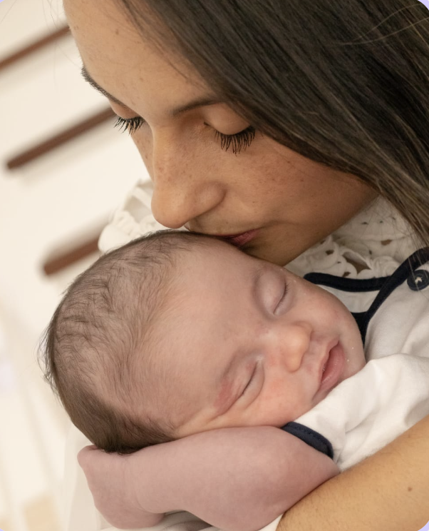
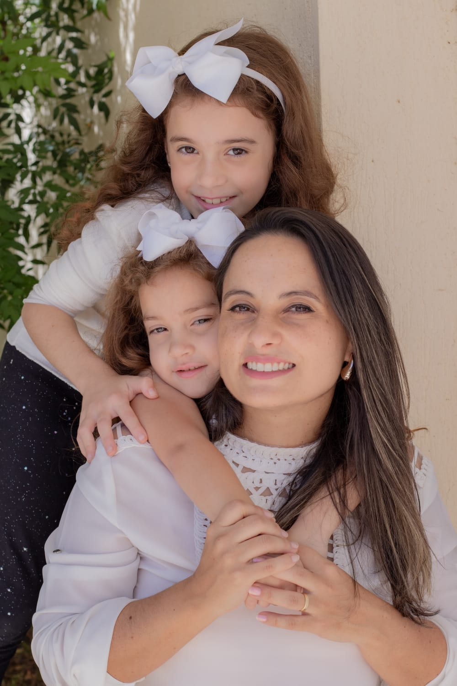
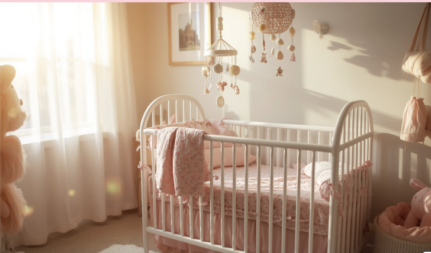
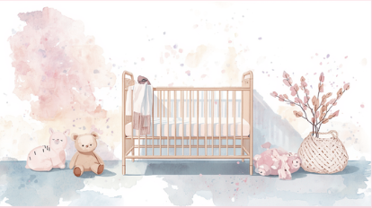

Se você já tentou de tudo, carrega o corpo pesado de cansaço e passa as madrugadas em claro, saiba que a culpa não é sua. Descubra um caminho acolhedor para voltar a descansar.

Sou especialista em sono infantil e mãe de três filhos. Há pouco tempo, eu também vivia o desespero de um bebé que acordava a toda a hora e a exaustão de passar noites em claro.
Criei o método Durma + Sem Choro! para provar que é possível ter noites tranquilas sem precisar de deixar o bebé a chorar sozinho.
Isto ajuda a identificar a fase de desenvolvimento e as janelas de sono adequadas:
(Este é o fator número um que afeta as madrugadas da família inteira...)
Enquanto o seu bebé dorme profundamente, o cérebro dele processa tudo o que aprendeu, o sistema imunológico fortalece-se e o hormónio do crescimento atua com força total.
Bebés que dormem bem choram menos, ganham mais disposição para explorar o mundo e desenvolvem-se com muita saúde emocional.

"Eu já não sabia o que era dormir mais de duas horas seguidas. O Lucas só pegava no sono no meu colo e chorava sempre que eu tentava passá-lo para o berço.
Quando conheci o método da Paula, percebi que pequenas mudanças mudavam tudo. Na primeira semana, ele já dormia no berço e eu voltei a ter paz!"
Mãe da Manu e do Henrique recuperou as noites de sono.

Nós sabemos exatamente o peso que você carrega nos ombros. O corpo dormente de cansaço, a irritação que surge por falta de descanso, a culpa por perder a paciência e a sensação de que você está a falhar como mãe. A culpa não é sua! Sem o método certo, tentar adormecer um bebé viciado em colo e peito é uma missão desgastante.
A solução definitiva está em ensinar o seu pequeno a adormecer com autonomia e segurança emocional, através de um passo a passo testado, humano e sem choro prolongado.
À vista ou em até 12x no cartão de crédito
Depoimento real de mãe que aplicou o método da Paula.
"Passar as madrugadas em claro a embalar já era rotina aqui em casa. As aulas são super diretas e práticas, sem enrolação para quem já está exausta."
— Camila Silveira (Mãe da Sofia, 1 ano e 2 meses)"O melhor investimento que fiz por mim e pela minha família. Voltei a dormir e sinto-me muito mais paciente durante o dia com o meu pequeno."
— Juliana Ribeiro (Mãe do Pedro, 6 meses)Teste o método sem compromisso. Se não vir diferença na rotina da sua casa, devolvemos 100% do seu dinheiro sem burocracia.
O acesso é 100% imediato após a aprovação do pagamento. Receberá um e-mail com o seu login e senha.
Ideal para bebés de 0 a 2 anos que enfrentam dificuldades com o sono e despertares frequentes.
De forma alguma! É um método totalmente acolhedor baseado na neurociência, respeitando o vínculo entre mãe e bebé.
O acesso é vitalício. Poderá ver e rever as aulas sempre que precisar, acompanhando as fases de crescimento do seu bebé.